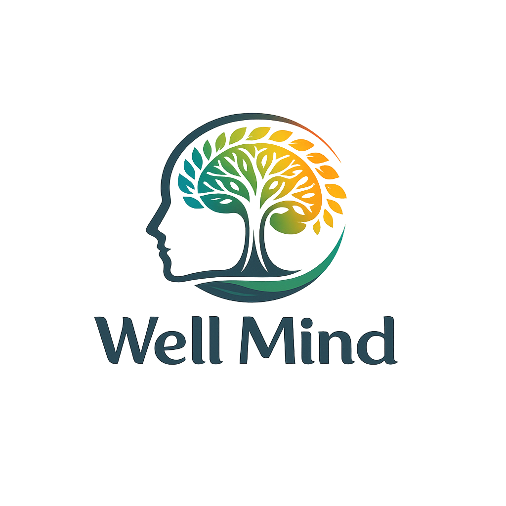
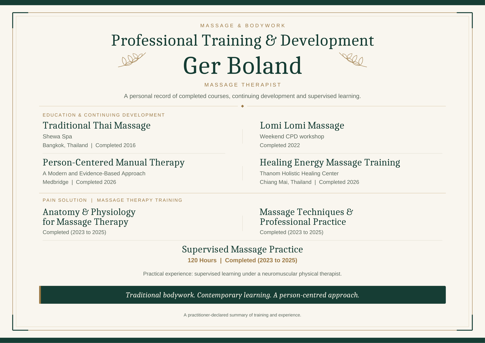
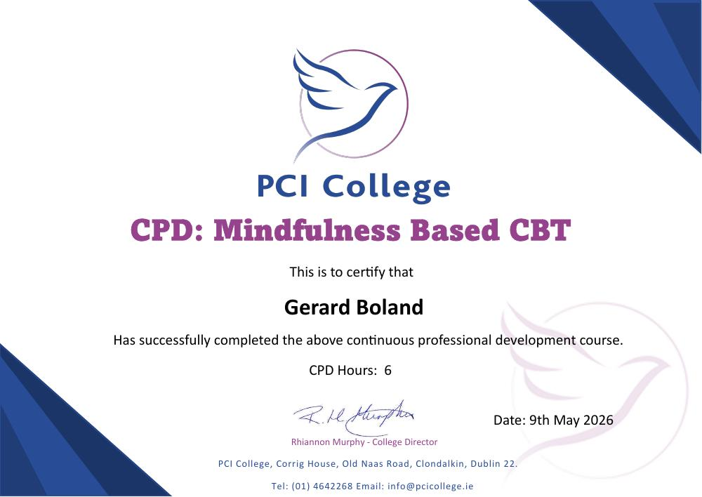
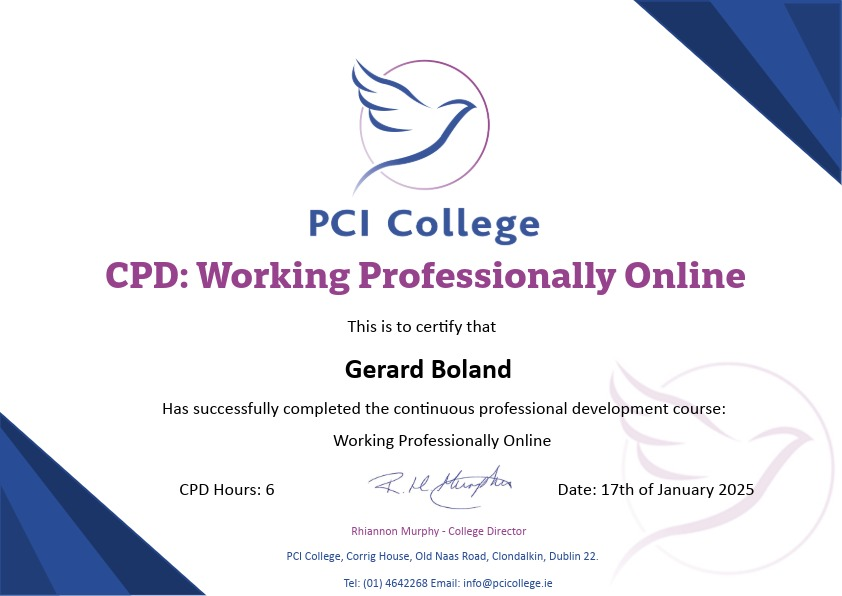
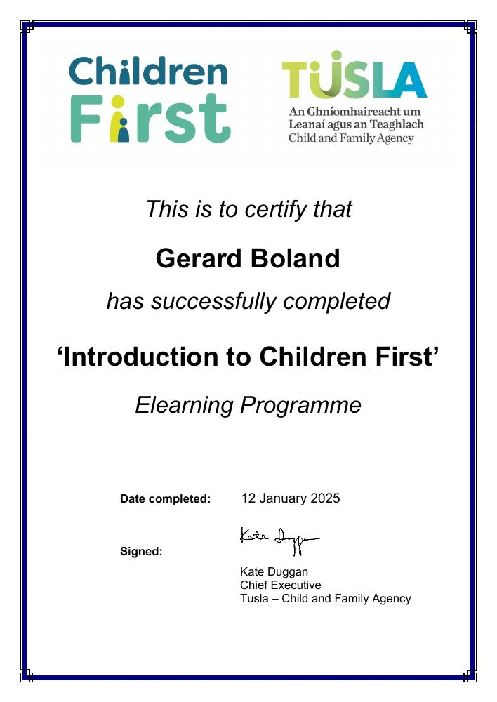
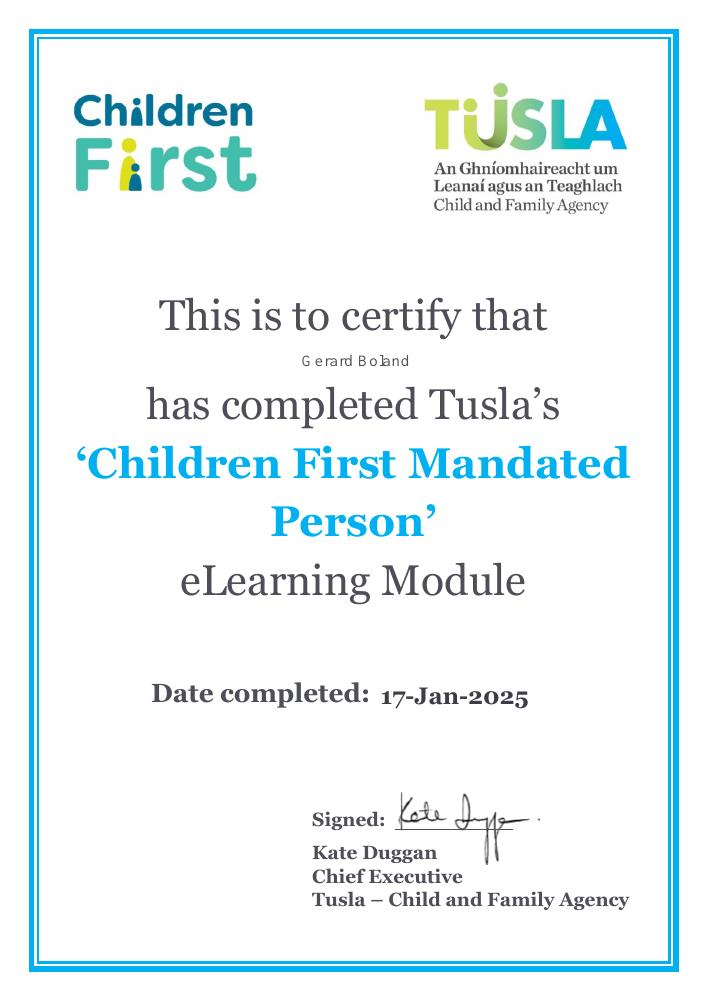

Personal development
Explore your habits, choices and goals with practical tools, useful learning and manageable steps to try in everyday life.
Explore personal developmentPERSONAL DEVELOPMENT & MASSAGE
Make time for yourself with practical personal development sessions online or massage in person. Choose the support you want at each appointment, with session packages offering exceptional value.
Personal development with Ger Boland focuses on self-awareness, everyday goals and practical tools. It is an educational service, separate from counselling or psychotherapy.
Explore a free first conversation15 minutes · Online · No obligation to continue
View sessions & packagesWhat matters
to you?
PERSONAL DEVELOPMENT & MASSAGE
Your paid sessions can be used for personal development, massage, or a mix across your package. Choose one service for each appointment.
Explore your habits, choices and goals with practical tools, useful learning and manageable steps to try in everyday life.
Explore personal developmentMake space for relaxation and hands-on bodywork with Ger. Arrange a massage appointment on its own or use a session from your package.
Explore my massage trainingUse every session for the same service, or choose personal development for some appointments and massage for others. See the packages and fees.
01 / PERSONAL DEVELOPMENT
In an online personal development session, you might have a clear goal or need help choosing a starting point. Together, we’ll agree a focus and what you would like to take away.
Take stock of your current situation, identify one priority and choose a manageable action to begin with.
Think through a current decision or change, consider your options and plan your next move.
Look at your routines, notice what gets in the way and choose small changes you can practise in everyday life.
Turn an intention into realistic next steps, whether it relates to work, relationships, habits or something personal to you.
Identify your everyday limits, practise saying no and find respectful ways to communicate what you are—and aren’t—comfortable with.
Practise expressing your needs, making requests and listening to others. Rehearse an everyday conversation so you can find words that feel clear and natural to you.
02 / MY PERSONAL DEVELOPMENT APPROACH
Education is a central part of my approach. We make time to understand an idea, connect it to your current situation and decide how you might use it.
My approach is humanistic: your values, choices and pace matter. I listen, ask questions and help you consider what is realistic for you. You decide the direction; we work towards an agreed personal development goal.
Psychoeducation means learning about how people think, feel and behave. Here, it is offered as general education for self-awareness and personal development. We might discuss habits, values, communication or ideas from attachment theory, without labelling you or treating a mental health condition.
Get to know GerThe GROW model helps us move from a current goal to practical action, with room to review what works for you.
What would you like to be different?
What is happening for you now?
What possibilities could you explore?
What feels like a realistic next step?
UNDERSTAND IT. TRY IT. TAKE IT WITH YOU.
We choose resources around your interests and goals, so the learning has a purpose for you.
Plain-language explanations and selected reading to help you understand a topic. Ask questions, consider different perspectives and connect the ideas to everyday situations.
Goal-setting worksheets, journaling prompts or the Wheel of Life to review your priorities. We can also use optional role-play to practise a boundary, make a request or try out the words for an everyday conversation.
Relevant worksheets, prompts or reading suggestions to revisit between sessions. Try an idea in your own time, then review what was useful and what you want to adapt.
03 / UNDERSTANDING THE DIFFERENCE
Here is what my personal development sessions offer, and where counselling or another professional service may be more appropriate.
Education, awareness and practical steps.
A structured space to learn about yourself and work towards a present or future goal.
We can acknowledge feelings and past experiences, but these sessions do not involve trauma processing, in-depth emotional work or treatment of mental health conditions.
Explore personal development sessionsTherapeutic support, assessment and treatment where needed.
If you are seeking help for the concerns below, an appropriately qualified counsellor, psychotherapist, GP or specialist service is the right route. WellMind personal development sessions do not assess or treat these concerns.
This is a guide to support outside these educational sessions, not a diagnosis checklist or a list of services I offer. Counselling may form part of someone’s care; medical or specialist treatment may also be needed.
Counselling at WellMind is planned for mid-2027, subject to completing my qualification and practice requirements. The scope of that service will be confirmed before bookings open; this list does not mean I will treat every condition shown.
There is overlap. Counselling can also include education, practical tools and personal development. The distinction here is the purpose and limits of my personal development sessions—not that learning belongs only on one side and feelings on the other. You do not need to try personal development before seeking counselling.
Learn more: Irish Council for Psychotherapy · NHS guide to talking therapies · HSE mental health information

LISTENING. LEARNING. NEXT STEPS.04 / MEET GER
Over the past four years, my college journey has given me so much to think about: how we understand ourselves, relate to others and make choices. I want to share that learning in a way that is useful beyond the classroom.
WellMind is a way for me to give back to the community through accessible education, practical resources and one-to-one personal development sessions. You don’t need a background in psychology to take part: we work through ideas in plain language, at your pace.
I also offer massage and bodywork, drawing on training in Thai massage, Lomi Lomi and manual therapy, alongside supervised practical learning. You can explore my massage training profile below.
I’m currently completing PCI College’s four-year BSc (Hons) in Counselling & Psychotherapy, with completion expected in June 2027. My personal development sessions draw on what I am learning while remaining a separate, educational service. They are not counselling, psychotherapy or a professional training course.
My aim is for you to leave with something you understand more clearly and something practical to try. I plan to offer counselling through WellMind from mid-2027, once my qualification and practice requirements are complete.
“My role isn’t to tell you how to live your life. It’s to help you explore what matters to you.”Ger Boland · Founder of WellMind
PROFESSIONAL DEVELOPMENT
Alongside my degree studies, I continue to develop my knowledge through additional training. Explore my massage and bodywork training profile, together with completed CPD and eLearning certificates.
PCI College
Expected completion: June 2027
PCI College’s programme combines academic learning, practical counselling skills and personal development. It takes an integrative approach, drawing on different therapeutic perspectives within a humanistic framework.
The course covers humanistic, cognitive-behavioural and psychodynamic approaches, alongside ethical practice, self-awareness, research and supervised clinical placement. It is developed and delivered by PCI College, and validated and awarded by Middlesex University.
For me, this learning has reinforced the value of listening, reflection and making ideas accessible. Through WellMind, I share relevant education and practical resources within the scope of my current personal development sessions. Counselling through WellMind is planned for mid-2027, once my qualification and practice requirements are complete.
Read about the degree at PCI College
MASSAGE & BODYWORK
My training brings together traditional massage, manual therapy and supervised practical learning. The profile includes 120 hours of supervised massage practice.
Practical experience: supervised learning under a neuromuscular physical therapist.

PCI COLLEGE
Continuing professional development course · 6 CPD hours
Completed
View certificate (PDF)
PCI COLLEGE
Continuing professional development course · 6 CPD hours
Completed
View certificate (image)
TUSLA · CHILD AND FAMILY AGENCY
eLearning programme
Completed
View certificate (PDF)
TUSLA · CHILD AND FAMILY AGENCY
eLearning module
Completed
View certificate (PDF)05 / PERSONAL DEVELOPMENT SESSIONS
After an introductory conversation to discuss fit, personal development sessions follow a simple structure. These sessions take place online.
We check in on what’s happening currently and review any steps you chose to try since our last session. Together, we agree what would make today’s session useful.
We work on your chosen goal or question, explain relevant ideas and use an exercise or resource to connect that learning to your everyday life. There is time to ask questions and make sense of it together.
We finish by agreeing a realistic action or small experiment, how you’ll notice progress and what you want to review next time. You can take away relevant resources or prompts to support that step between sessions.
07 / GOOD TO KNOW
It’s okay to want to know more before getting started.
Yes. Every paid session can be used for personal development or massage. Your four-session bundle or twelve-session package can include either service, or a mix across your appointments. Use every session for one service, or choose personal development for some appointments and massage for others. The package price stays the same.
Each appointment is for one service. For massage or a mixed package, email Ger to agree your appointments before booking.
Personal development sessions take place online and last 50 minutes. Use the personal development booking link to view availability in Studio Ninja.
Massage sessions take place in person and are arranged directly with Ger. Email ger@wellmind.ie with the session or package you’re interested in, and Ger will confirm the appointment details with you.
The free 15-minute introduction is an online conversation where you can ask about either service.
WellMind currently offers personal development and massage. Personal development sessions combine understandable ideas, practical resources, goal setting and reflection. We focus on what is happening now, what you want to work towards and the steps you can take. These sessions are not counselling or psychotherapy and do not provide mental health treatment.
Feelings and past experiences may come up in conversation. In these sessions, we acknowledge relevant context without moving into in-depth work on past experiences or emotional difficulties. If that kind of support is needed, we discuss counselling or another appropriate service separately.
Counselling through WellMind is planned from mid-2027, subject to completing my qualification and the requirements to practise. It is not currently available to book here.
Yes. Depending on your focus, I’ll share relevant worksheets, journaling prompts, exercises or reading suggestions. We make time to explain and use them together, so you can decide what is useful in your own life. This is informal personal development education, not a college course, qualification or therapy programme.
Not before we meet. You can bring a current challenge, a decision or an area you’d like to improve. Part of our first session can be choosing a realistic goal and agreeing a focus for our work.
We’ll introduce ourselves, discuss what you’re looking for and make space for your questions. It’s a chance to ask about personal development, massage and the packages before arranging an appointment, with no obligation to continue. It isn’t a counselling session.
A quiet, private space, a reliable internet connection and a device you are comfortable using. Headphones can help with privacy and sound. Please join when you can give the conversation your attention, rather than while driving or in a public place.
During personal development sessions, you don’t have to hide your feelings. We can acknowledge them and pause. We may recognise that something deserves deeper attention, but we won’t use these sessions to work through past trauma or undertake in-depth emotional exploration.
We’ll discuss whether it is appropriate to continue with our agreed personal development focus, pause sessions or seek a separate service such as counselling. Personal development sessions are not a substitute for that support.
Conversations are treated with care and confidentiality. We’ll discuss confidentiality and its limits before working together, including serious safety concerns and circumstances where disclosure is required by law.
Sessions are not recorded. Please do not record a session without prior agreement.
Choose a single session, a four-session bundle or a package of 12 weekly sessions. Every paid session can be used for personal development or massage, and you can mix the two across a package. If you’re unsure where to begin, the free 15-minute introduction is a chance to discuss your options. See the options and fees.
Please give at least 24 hours’ notice to cancel or reschedule. Late cancellations or missed appointments may be charged, as set out in the terms agreed before booking.
WellMind is not a crisis service. If you are having thoughts of suicide, contact your GP, mental health team or a crisis support service promptly. In Ireland, if you are at immediate risk of harming yourself or someone else, call 112 or 999, or go to your nearest emergency department. Please do not wait for a WellMind appointment or reply. Find current HSE support options.
YOUR FIRST STEP
A free 15-minute introduction to discuss your aims,
ask questions and see whether these sessions fit your needs.
Prefer to email? ger@wellmind.ie
Meet Ger online, ask about personal development or massage, and discuss the session packages. This is an introduction, with no obligation to book further sessions.
Booking opens in Studio Ninja.
What you hope to get from personal development or massage, how the sessions work, and how you can mix them across a package. You can also ask about fees, appointment details and availability before deciding.